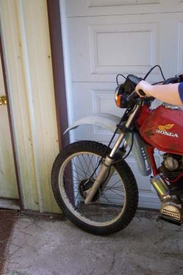
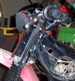
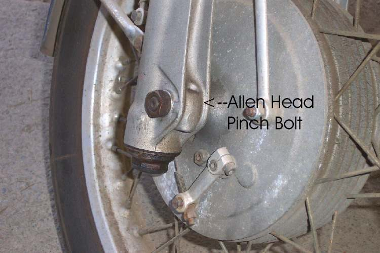
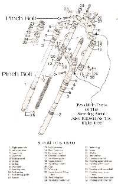
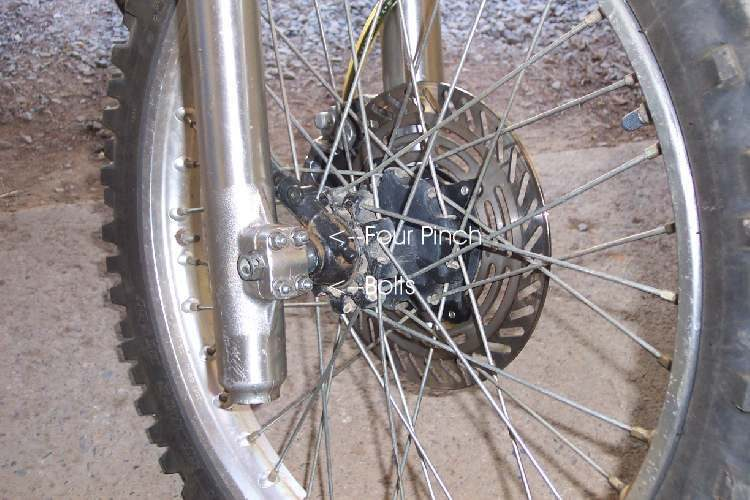

When you ride in a straight line, the handlebar is turned a little to one side, or when you stand in front the bar is not square with the front wheel. This usually happens after a small fall, a knock against a wall, or hitting a pothole: the fork legs twist in their clamps, or the bar turns in its mounts. It can also mean a bent bar, bent forks, a bent yoke (the clamps that hold the forks), or a rear wheel out of line that makes you steer to compensate.
Is it safe to ride?
No, until you have checked for bent parts. If only the forks have twisted in the clamps and nothing is bent, it can be aligned at home.
Quick checks first
- Was the bike dropped or hit? When?
- Look along each fork tube: straight?
- Are both fork legs at the same height above the top clamp?
- Is the handlebar itself bent (compare left and right grip heights and angles)?
- Look at the chain adjuster marks on both sides.
- To realign a twisted fork, loosen the pinch bolts only a little, so the legs can twist in the clamps but not slide, and turn the bars gently into line. Retighten to the value in your bike's manual.
- If the bars cannot be lined up this way, the frame, forks, axle or yokes may be bent. See Align the front wheel, forks and handlebar.
Diagnose it step by step
1Has the bike been crashed, or is any part visibly bent?
- Yes: do not ride. Go to The bike has been dropped or crashed and Inspect the frame after a crash. Bent forks, yokes and frames are not straightened at home.
- No: go to step 2.
2Is the handlebar itself bent?
- Yes: replace the handlebar. Bending it back weakens the tube.
- No: go to step 3.
3Has the bar turned in its clamps or rubber mounts?
- Yes: square it and tighten to the model torque. Rubber-mounted bars (as on the K-Light 125) can twist if a mount rubber is torn. See Align the front wheel, forks and handlebar.
- No: go to step 4.
4Hold the front wheel between your knees and push on the bar. Are the forks twisted in the clamps?
- Yes: Align the front wheel, forks and handlebar: loosen the clamps and axle, straighten, retighten in order.
- No: go to step 5.
5Are the chain adjuster marks different on each side, so the rear wheel points off line?
- Yes: realign with Check and adjust chain slack.
- No: go to step 6.
6After alignment, do the bars still sit crooked, or do the forks feel stiff?
- Yes: a fork tube or yoke is bent. Workshop. See Fork legs are twisted or uneven.
Causes, most likely first
| Cause | How to confirm | Fix |
|---|---|---|
| Forks twisted in clamps | Wheel turns against bar with force | Align the front wheel, forks and handlebar |
| Bar turned in clamps or mounts | Bar not square to top clamp | Square and tighten |
| Bent handlebar | Grips at different angles | Replace bar |
| Rear wheel out of line | Adjuster marks differ | Check and adjust chain slack |
| Bent fork, yoke or frame | After crash; will not align | Inspect the frame after a crash |